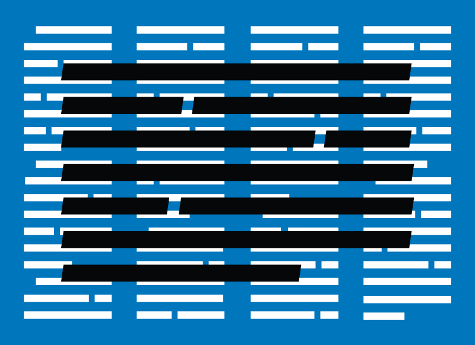
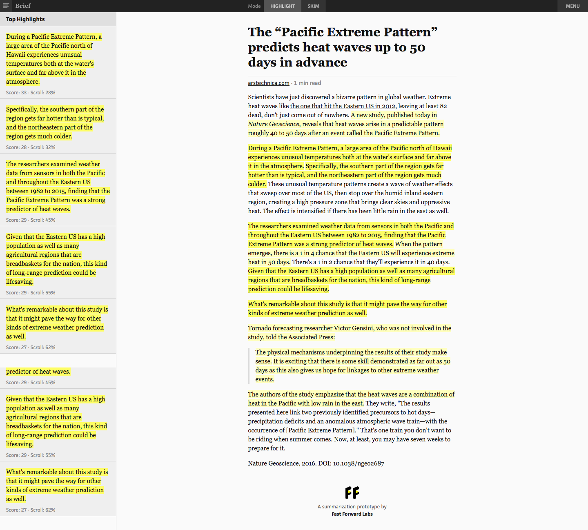
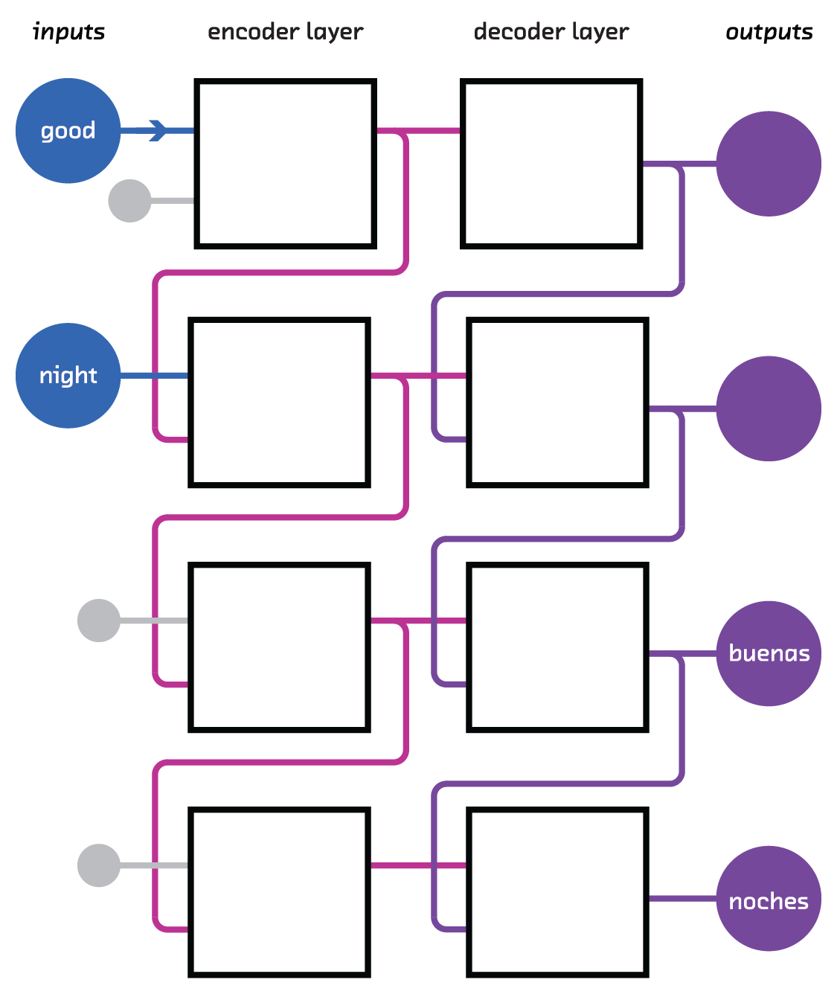

class: center, middle, full-bleed  ## Current research/Fast Forward Labs ??? I work for Fast Forward Labs, which sits at the bridge between commerical world and academic fields like machine learning, computer science and statistics. We investigate things that are: - commercially relevant - cool - recently possible Concretely, this means they are more possible today than they were a year or two ago, and we think will be even more important in a couple of years. I'm going to talk about a bunch of stuff that fits those criteria, that we've spent some time looking into. Some of these things became Fast Forward Labs reports and prototype implementations, which our clients have access to, some we're still working on, some we're keeping an eye on for now. --- class: full-bleed, middle <video width="100%"> <source src="roborealtor.webm"> </video> ??? Natural language generation is taking structured data, and turning it into unstructured, human-readable text. This has become more important as the amount of structured data we need to analyse has grown, and the number of people who need to analyse it has also grown. Distilling the facts down to sentences has become more valuable. But at the same time, the growth of data has made it possible for us to do a better job automating this process. For example, computers can more easily identify noteworthy features, simply because they've seen more examples of "normal". --- class: full-bleed, middle <video width="100%" controls autoplay loop> <source src="roborealtor.webm"> </video> ??? We built a prototype that exhibits this by generating real estate listings that conform to the rules of grammar, read like real estate listings, and reflect the factual information you have about the apartment. You can imagine doing something like this for investment portfolios, sales reports or the weather, or pretty much any data that could originate from a database, spreadsheet, or web form. --- class: full-bleed, middle <img src="batch.svg"> ??? Streaming data is data that comes in at such a rate, and is so expensive to move around, that you only have one chance to process it. More of us have access to (or have to deal with!) this data now than did a couple of years ago. Batch algorithms can't keep up in this situation. You have to be smarter about the kinds of analyses you run on it. You've got to make them count. --- class: full-bleed, middle <img src="stream.svg"> ??? We're interested in probabilistic algorithms in this realtime environment. These are probabilistic in the sense that they aren't guaranteed to give exactly the right answer. That sounds bad, but what if they come with a guarantee that the answer is within 1 or 0.1% of the true answer, and instead of taking 24 hours to calculate, they take a second or a minute. Or instead of reading a terabyte of data from disk, they read a few tens of bytes over a cell network. --- class: full-bleed, middle <video loop autoplay controls width="100%"> <source src="cliquestream.webm"> </video> ??? In many situations "within 1%" is not only good enough. Having the approximate answer in realtime opens up new opportunities and products, or makes it possible to do things we currently do on AWS, on mobile phones. This is our prototype Cliquestream, which uses these techniques to instantly explore the torrent of data we get from the Reddit API. --- class: full-bleed, middle, center <img src="pictograph-eg.png" width=100%> ??? Neural networks or deep learning are of course the machine learning technology that has received the most attention over the past few years. And deservedly so. Traditional machine learning can only work with the data you input, in the form you input it. Neural networks are able to manipulate the data to *learn* higher order features that are useful for its particular task. It's this ability to learn features that has made neural networks the current leading technology for computer vision problems. We built a prototype demonstrating this. It looks at photos in your Instagram account. The failure modes here are funny, but they're also important. These techniques are brand new, and they're also probabilistic, both of which raise the possibility they might go wrong. We think a lot about this! --- class: center, middle, full-bleed <img src="overview_extracted.png" width="90%"> ??? The next capability is summarization. There are fundamental reasons why summarization is a big deal, but I just want to touch on the intrinsic task. Wouldn't it be cool be able to extract the most salient points from a long document? --- class: center, middle, full-bleed <img src="overview_multi.png" width="55%"> ??? Or even better, extract the most salient points from a big box of documents. This is summarization. Automated and applied at scale, it's a breakthrough capability. But how do you do it? --- class: center, middle, full-bleed <img src="rnn-background_sequential.png" width="50%"> ??? Traditional machine learning struggles here because of a simple almost mundane reason: documents (i.e. the input) are of different lengths. There were hacky ways around this, but they all threw away crucial information. But a couple of years ago, researchers figured out how to chain together neural networks (and crucially, how to train these chains). This allows input or output of arbitrary size. --- class: center, full-bleed  ??? We use these to techniques, language embeddings and recurrent neural networks in our summarization prototype, Brief, which is a browswer extension. Brief is trained on example summaries from a longread aggregator called The Browser. It uses word embeddings and knows how to identify salient sentences in the context of the other sentences in a document. --- class: center, full-bleed <img src="arstechnica-skim.png" width="100%"> ??? It also has skim mode. --- class: center, full-bleed <img src="alphago.png" width="100%"> ??? [http://www.fastforwardlabs.com/brief/](http://www.fastforwardlabs.com/brief/) Or demo the working prototype --- class: center, middle, full-bleed  ??? But because they can input and output sequences of different lengths, recurrent networks are being used to make breakthroughs in language tasks like translation, simplification, caption creation, search and speech recognition every day. --- class: center, middle, full-bleed <img src="rnn-background_legos.png" style="width:80%"> ??? And the good news is, while neural networks have a tough reputation, the libraries are starting to reach the point where non-specialist engineers can work with them. We're really excited about this stuff! --- background-image: url(finland.png) ??? Bayesian inference allows you to infer the probabilistic implications of your data. It's the gold standard of machine learning because the results are highly interpretable and come with confidence intervals This is a model of the real estate market that gives you an estimate of real estate in Finland using Bayesian inference. Crucially, it also gives you a confidence interval for that estimate, and the model is highly interpretable. But practically speaking, inference is a really tough engineering problem (mean field variational inference, Gibbs sampling, conjugacy, Hamiltonian Monte Carlo Markov chains, etc.) Probabilistic programming aims to abstract these technical details away so you can focus on the implications of your data. Probabilistic programming languages have been around in academia for a while, but they've been rough around the edges and computationally intensive. They've now reached a point when they're ready for primetime. --- class: center, middle, full-bleed <img src="weapons_math.jpg" width="49%"> ??? Supervised ML is a system for generating rules of thumb from past data. Rules of thumb about people are called stereotypes. Good, bad, true, false, acting on stereotypes places you on commercially, legally and ethically dangerous ground. --- class: center, middle, torus, full-bleed <h1 style="color: #ff028d; font-size: 400%;"><marquee scrollamount="20">😎<i> THE FUTURE!! </i>📊</marquee></h1> ??? The future - active learning - reinforcement learning - hardware We're particularly excited about active learning. If you have a model that gives you a prediction and a confidence, and the confidence is too low, you're normally stuck. But with active learning, you can spend time or resources on gathering more information, until your prediction reaches a confidence level you're comfortable with. Imagine how this would change onboarding at a website. You could optimize the amount of information you ask a customer for, so that you're reasonably confident in your ability to make predictions, without bothering them with questions at signup. Reinforcement learning was in the news just yesterday, when Elon Musk's OpenAI released Gym, a tool for comparing reinforcement models. RL allows the agent to collect its own training data, and learn creatively about the rules of the world it lives in, so it's particularly relevent for robots or other systems that exist in the physical world. We keep an eye on hardware because hardware developments are so important in ideas that are purely of academic interest into algorithms whose time has come. Right now this means things like GPUs, sensors, and network technology. --- # Summary - Text generation - personalization - Real time computation on low power devices - richer mobile experiences - Computer vision - video search, environment description - Text summarization - on-the-go news - Probabilistic programming - assessing odds of success when information is missing - The future: active learning, reinforcement learning, hardware --- --- class: center, middle <img src="lda_topics.png" width="80%"> ??? The first question, though, is how do you find topics. That's what topic modeling, and Latent Dirichlet Allocation in particular, does. You run this algorithm (2003 original version, 2010 online) on an (ideally large) corpus of documents to learn topics. These are collections of words that co-occur. --- class: center, middle <img src="lda_evaluate.png" width="80%"> ??? Having learned the topics, you then look for those topics in a single document. That document can then be expressed as a mix of topics. --- class: center, middle, full-bleed <img src="strain.png" width="60%"> ??? Having found which topics dominate a document, you then find sentences that are dominated by each of the important topics. These form a representative sample of the ideas in the document. This approach works really well for product reviews, where that representativeness is important to the summary. There might be 5000 paragraph long reviews of a popular book. Together these are longer than the book itself, so that's too much information to take in. But the single number (3.8/5 or whatever) is too little. By displaying a representative sample, you can learn about the diversity of ideas expressed in the reviews. This technique is very practical, and like Luhn's method, doesn't need example summaries. And topic modeling is generally very useful when analysing trends in a corpus (e.g. customer support) But you can see here one of the limitations of this method: the topics don't come with names. But there are more fundamental problems make the summary less coherent: topic modelling ignores word order, and it necessarily throws away a lot of information by reducing a document to ~100 numbers.